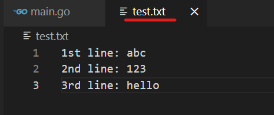

Golang >> 10 Essential Tips for Golang Developers
Table of Contents
Introduction
Google Go, often known as Golang, is an open-source programming language. It is intended to be simple, efficient, and dependable, making it an ideal choice for current software development. In this article, we will go over 10 key Golang developer tips, covering subjects like maps, strings, slices, loops, file handling, and more. Let’s get started!

1. How to check if a map contains a key in Go
In Go, you can use the comma ok idiom to check if a map contains a specific key. Here’s a simple example:
If the specified key exists.
package main
import "fmt"
func main() {
m := map[string]int{"apple": 42, "banana": 10}
value, ok := m["apple"]
if ok {
fmt.Println("Key exists:", value)
} else {
fmt.Println("Key does not exist")
}
}
Key exists: 42
If the specified key does not exist.
package main
import "fmt"
func main() {
m := map[string]int{"apple": 42, "banana": 10}
value, ok := m["grape"]
if ok {
fmt.Println("Key exists:", value)
} else {
fmt.Println("Key does not exist")
}
}
Key does not exist
2. How to efficiently concatenate strings in Go
To concatenate strings efficiently in Go, use the strings.Builder type.
package main
import (
"fmt"
"strings"
)
func main() {
var builder strings.Builder
builder.WriteString("Hello, ")
builder.WriteString("World!")
result := builder.String()
fmt.Println(result)
}
Hello, World!
3. How to write multiline strings in Go
To write multiline strings in Go, use backticks (`) as delimiters.
package main
import "fmt"
func main() {
multilineString := `This is a
multiline
string in Go.`
fmt.Println(multilineString)
}
This is a
multiline
string in Go.
4. How to concatenate two slices in Go
You can use the append function to concatenate two slices in Go.
package main
import "fmt"
func main() {
slice1 := []int{1, 2, 3}
slice2 := []int{4, 5, 6}
result := append(slice1, slice2...)
fmt.Println(result)
}
[1 2 3 4 5 6]
5. How to loop like foreach in Go
You can use the range keyword to loop over elements in a slice or map.
package main
import "fmt"
func main() {
nums := []int{1, 2, 3, 4, 5}
for i, num := range nums {
fmt.Printf("Index %d: %d\n", i, num)
}
}
Index 0: 1
Index 1: 2
Index 2: 3
Index 3: 4
Index 4: 5
6. How to convert an int value to string in Go
You can use the strconv.Itoa function to convert an int to a string.
package main
import (
"fmt"
"strconv"
)
func main() {
num := 1234
str := strconv.Itoa(num)
fmt.Println(str)
}
1234
7. How to check if a file exists in Go
You can use the os.Stat function and check the error to determine if a file exists.
If the test.txt file exists.
package main
import (
"fmt"
"os"
)
func main() {
_, err := os.Stat("test.txt")
if os.IsNotExist(err) {
fmt.Println("File does not exist")
} else {
fmt.Println("File exists")
}
}
File exists
If the not-exist.txt file exists.
package main
import (
"fmt"
"os"
)
func main() {
_, err := os.Stat("not-exist.txt")
if os.IsNotExist(err) {
fmt.Println("File does not exist")
} else {
fmt.Println("File exists")
}
}
File does not exist
8. How to check the type of an object in Go
You can use the reflect.TypeOf() to get the type of an object.
package main
import (
"fmt"
"reflect"
)
func main() {
var1 := "string"
var2 := 123
var3 := 4.56
fmt.Println(reflect.TypeOf(var1))
fmt.Println(reflect.TypeOf(var2))
fmt.Println(reflect.TypeOf(var3))
}
string
int
float64
You can also use the %T format specifier with fmt.Printf to print the type of an object.
package main
import "fmt"
func main() {
var1 := "string"
var2 := 123
var3 := 4.56
fmt.Printf("%T\n", var1)
fmt.Printf("%T\n", var2)
fmt.Printf("%T\n", var3)
}
string
int
float64
9. How to format a string in Go
You can use fmt.Sprintf to format a string in Go.
package main
import "fmt"
func main() {
name := "Kevin"
age := 30
formatted := fmt.Sprintf("Name: %s, Age: %d", name, age)
fmt.Println(formatted)
}
Name: Kevin, Age: 30
10. How to read a file line by line in Go
You can use the bufio package to read a file line by line.
For example, we have the following file.

package main
import (
"bufio"
"fmt"
"log"
"os"
)
func main() {
file, err := os.Open("test.txt")
if err != nil {
log.Fatal(err)
}
defer file.Close()
scanner := bufio.NewScanner(file)
for scanner.Scan() {
fmt.Println(scanner.Text())
}
if err := scanner.Err(); err != nil {
log.Fatal(err)
}
}
1st line: abc
2nd line: 123
3rd line: hello
Conclusion
These 10 essential Golang tips will help you operate more efficiently with the language and increase your comprehension of it. Always refer to the official Go documentation for more information and recommended practices. Have fun coding!